In this task we want to calculate vector fields on discrete surfaces.
1. Precalculate the mesh information
To calculate vector fields for discrete surfaces, we will use a class, where we precalculate different quantities that will come in handy for the calculation. You will calculate these quantities directly in the constructor of the class Mesh. In this TP, we will define subsequently a class ElectricMesh that will inherit from this class.
Remark: For the following task, there are multiple ways to calculate intrinsic mesh quantities. You can use the half-edge data structure that you have seen already in TD4, but you do not have to use it.
In a first step, we want you to prepare a class Mesh to precompute all necessary mesh information. Further, we want you to compute the barycentric and voronoi dual complex. To compute the Voronoi dual complex, you need to calculate the circumcenter of the primal triangles. For the barycentric dual complex, you need to compute the barycenters. The dual complex is no longer a simplicial complex; we cannot represent it with a Eigen::MatrixXd V and Eigen::MatrixXi F. A priori we cannot tell the number of vertices in a dual face. Therefore, we will use a std::vector< std::vector< int>> where each entry contains the indices of the dual vertices. As in the simplicial case, the order of the vertices will determine the face.
The disadvantage of the Voronoi dual complex is that for a “bad” mesh, with obtuse triangles, the circumcenter may lie far outside the triangle.
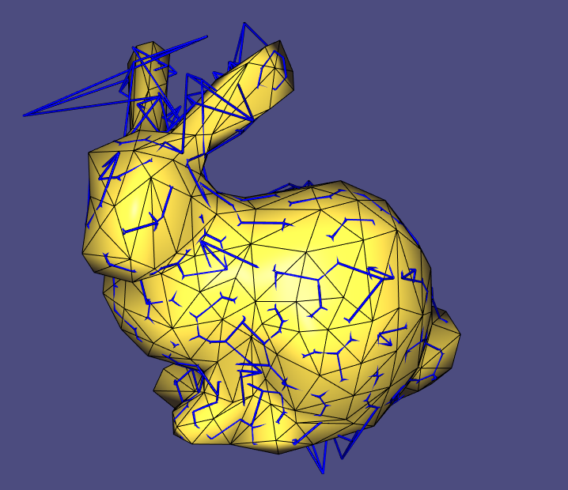
The advantage of the Voronoi dual complex compared to the barycentric dual complex is that the dual edges are necessarily perpendicular to the primal edges. However, for the barycentric dual complex, the dual vertices will always lie inside the faces.
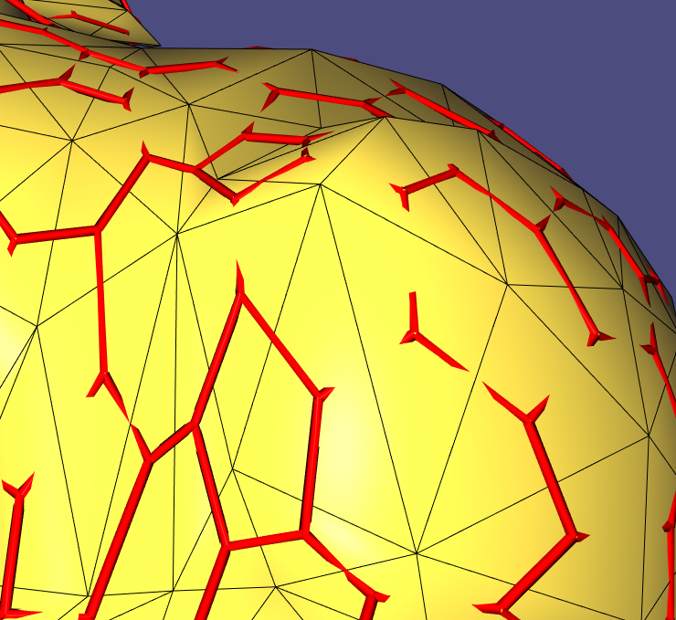
However, if your mesh is sufficiently “nice”, the vertices in the dual complex will lie inside the primal triangles, and primal and dual edges intersect perpendicular.
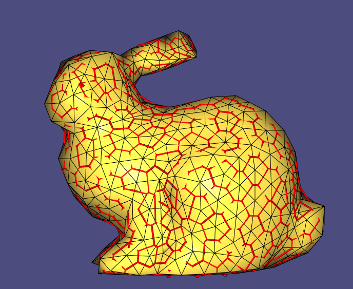
Task: Complete the method build_dual_complex and compute_edges. We provide you with a class Visualizer to create wireframes and vector fields. The method get_wireframe_from_edges(const MatrixXd& V, const std::vector<Edge>& edges, MatrixXd& V_wireframe, MatrixXi& F_wireframe, double radius) constructs for a given set of points and edges, that are formed out of these points a novel (triangular) mesh, that can be attached to the viewer. Once the wireframe is formed, you can attach this new mesh to the viewer through
Experiment with different the Voronoi Dual and the barycentric dual. Create figures and attach screenshots to your submission.
In a second step, you have to initialize a basis for every tangent space. We will store the basis as a std::vector< std::pair< MatrixXd,MatrixXd>>, make sure that you are using an orthonormal basis. These basis will later in the TD allow to encode represent face-based vector fields and to encode parallel transport between primal faces.
To debug, you can use the provided method visualize_basis, you might need to play with the parameters for scaling and the radius of the tubes in order to get a good result.
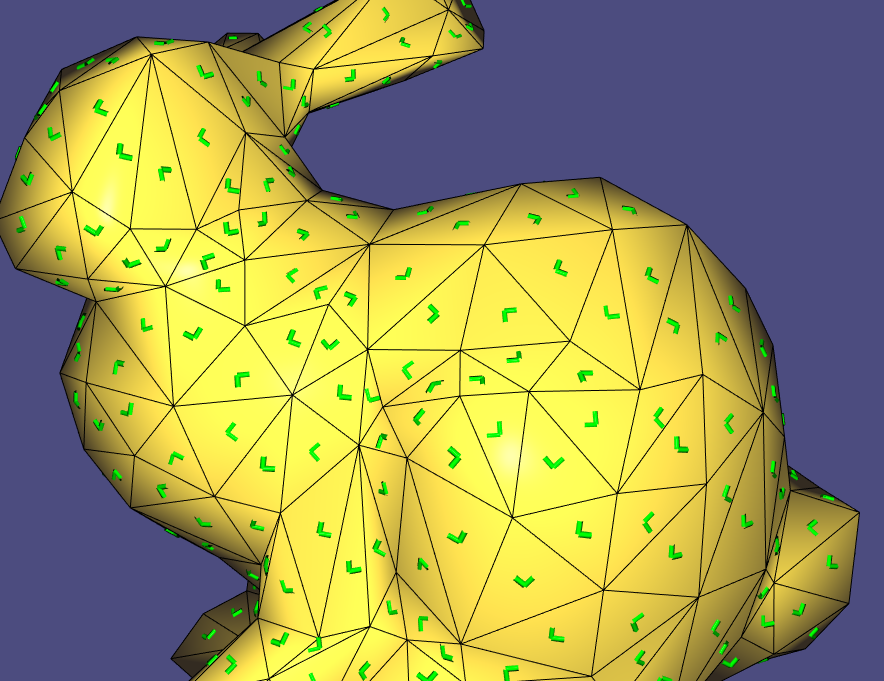
However, you need to make sure that your basis are chosen in a consistent manner, such that they can be aligned with an angle. It might be necessary to flip the order of the vectors in the basis. This means, in particular, that you should avoid a situation like that:
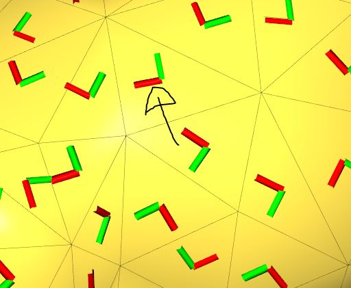
2. Hodge-Helmholtz-Decomposition and Electrostatics
In this part, we want to compute vertex-based vector fields and calculate electric fields on surfaces. For the code, you will fill in the methods in the class ElectricMesh that inherits from the class Mesh. The overall idea will be that you define a charge density $\rho$ on the surface. Every charge density induces an electric field $E$ satisfying Gauss’ and Faraday’s law, i.e
As you have seen in the lecture about Hodge-Helmholtz-Decomposition, you can decompose any vector field into the sum of a curl-free vector field, the gradient of a scalar field, and a harmonic component. In the case of electrostatic, the harmonic component can be neglected, such that there exists an electric potential $\phi$ such that
$$
E = -\mathrm{grad}(\phi).
$$
You can solve for this potential by taking the divergence on both sides, leading to
Since we have established the Laplacian for triangulated surfaces, we can now solve for the electric potential. However, you need to ensure that the equation is solvable.
Given a mesh, let $\Delta = A^{-1} L$ be the Laplace-Beltrami operator, where $A$ is the mass matrix and $L$ contains the cotangent weights. You have seen that on any closed surface, the dimension of the kernel of the Laplacian is equal to the number of its connected components, hence in our case $1$. Since we assume that the mesh is non-degenerated, the mass matrix containing the Voronoi areas of the vertices is a diagonal, symmetric, positive definite matrix.
Let $\mathbb{R}^{|V|}$ be the space of discrete scalar-valued functions; then $A$ induces a scalar product on this space through
$$
\langle u, v\rangle:= u^T A v.
$$
The Laplace-Beltrami operator is self-adjoint w.r.t this scalar product, since
$$
\langle\Delta u, v\rangle = u^T L^T (A^T)^{-1}A v\rangle = u^T L v = u^T A A^{-1}L v = \langle u, \Delta v\rangle.
$$
You know from Linear Algebra that you can, therefore, decompose
where the orthogonality is to be understood with respect to the aforementioned scalar product. To ensure the solvability of the equation—i.e., ensure that $\rho\in \mathcal{I}(\Delta)$—we will project $\rho$ onto the image. To do that note that $1\in \mathbb{R}^{|V|}$, i.e., the function that is $1$ at every vertex satisfies $1\in \mathcal{N}(\Delta)$, thus $\mathcal{N}(\Delta) = \mathrm{span}(1)$. Hence, we need to ensure that $\langle 1, \rho\rangle = 0$. The projection onto the image of the Laplacian can, therefore, be computed as
where $A_{jj}$ denotes the Voronoi area of the $j-$th vertex.
Task:
Prepare a valid input charge distribution in the class ElectricMesh that inherits from the class Mesh. Complete the method initialize_charge_density.
Solve the Poisson problem (-\Delta \phi = \rho.) As in the TP about conformal parametrization, it will be better for the numerics to solve instead
(-L\phi = A\rho.) You can use any in-built solver of Eigen of your choice, for example, ConjugateGradient< SparseMatrix< double>>. Complete the method solve_for_u.
Calculate the electric field. To do that calculate for every face the gradient of the electric potential. Complete the method compute_electric_field and overwrite the matrix electric_field, such that each row contains the obtained electric field. Draw the electric field using the method build_face_based_vector_field onto your mesh.
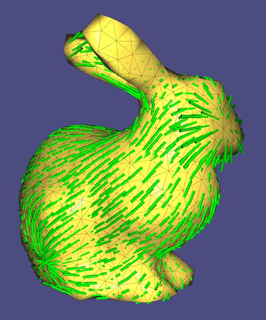
Remark:
For a triangle consisting of the vertices $[v_i, v_j, v_k]$, the gradient of a function $u$ defined on the vertices -evaluated at the barycenter $c$ of the triangle- can be calculated as
3. Vector Field Processing with Discrete Connections
In this part of the TP we want to calculate face based vector fields on discrete surfaces that arise through parallel transport with a trivial connection.
Trivial Connections and Parallel Transport
Now, we want to calculate face-based vector fields that arise through parallel transport of a trivial connection on a discrete surface. For the following tasks, you will use the class SolverMesh that inherits from the class Mesh from TD 8. To perform this task, you must have defined the dual faces (F_dual) in the class Mesh. Further, you need to have set a basis for each face (bases_tangent_spaces).
There had been a minor update to the class Visualizer compared to TD8. I overloaded the method build_face_based_vector_field so that you can, in the end, visualize the vector field just by passing the SolverMesh instance.
A detailed description of the algorithm that you will implement can be found in the original publication.
1) Calculation of the Discrete Levi-Civita Connection
In a first step, we will calculate the Levi-Civita Connection for the mesh. In the constructor of the class Mesh, you have already defined an orthonormal basis for every tangent space. A discrete connection on the discrete tangent bundle is a linear map per dual edge mapping from adjacent tangent planes to each other. As you have seen in the lecture, the Levi-Civita Connection can be obtained through the following procedure:
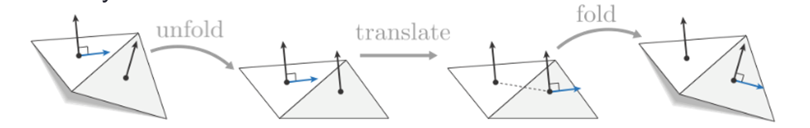
Once the tangent planes are folded out in a plane, the bases can be aligned with a 2D rotation.
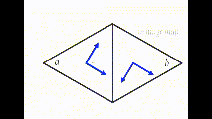
It is now your task to calculate this angle per dual edge and store it in the range $[-\pi,\pi]$. Complete the method compute_adjustment_angles and store, for every edge, the frame adjustment angle in the vector adjustment_angle_frames.
Fortunately, you do not have to unfold your triangles actively to get this rotation. Instead, you can align the first vector of your basis of your start face with the shared edge and subsequently do the same with the first vector of the basis of your second face.
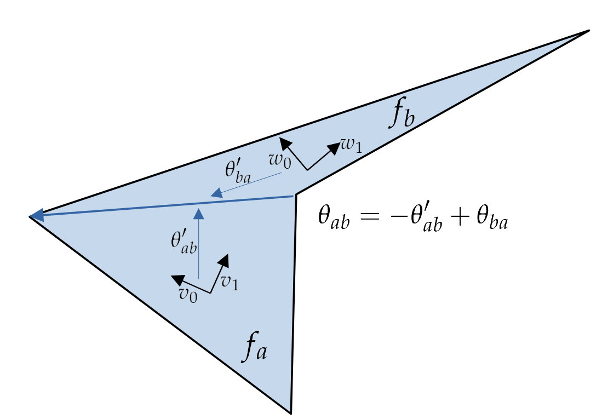
2) Calculation of the Holonomy
Once the Levi-Civita connection/adjustment angles are calculated, you can calculate the holonomy around each basis cycle by computing the sum of the adjustment angles. Complete the method compute_holonomy.
The sum of your adjustment angles should amount to an integer multiple of $2\pi$ (the number of turns in your cycle) to the Gaussian curvature of each vertex. Using the header < igl / gaussian_curvature.h>, we provide you a piece of code to verify whether your angle defect satisfies this. Once you checked your results, overwrite the variable holonomy with the values of the holonomy for every basis cycle around every vertex.
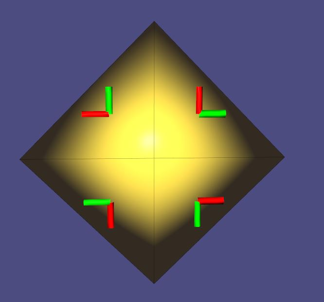
We highly recommend using the class Visualizer for visual debugging. If you realize, for example, that your calculations work for some edges but not for others, you can mark them (for example using the variable bad_edges) and visualize them separately, as in the figure below. Like that, you might discover specific patterns where something might have gone wrong in the first place.
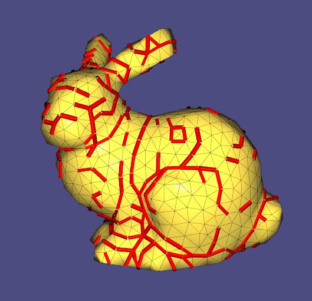
If $\mathcal{B}_ a, \mathcal{B}_ b$ describe the bases of the tangent spaces $f_a$, resp. $f_b$, let $v$ be a tangent vector in $f_a$ and $v’$ be the tangent vector in $f_b$ that arises through parallel transport with the Levi-Civita connection along the dual edge $e_{a,b}$. Let
$[v]_{\mathcal{B}_ a}, [v’]_{\mathcal{B}_ b}\in \mathbb{R}^2$ be the coordinate vectors of $v,v’$ in the respective bases. In this case, the parallel transport can be expressed via
$$
[v’]_{\mathcal{B}_ b} = \begin{pmatrix} \cos(\theta_{ab})& -\sin(\theta_{ab})\\ \sin(\theta_{ab})& \cos(\theta_{ab})\end{pmatrix}[v]_{\mathcal{B}_ a}
$$
3) Calculation of Basis Cycles
In order to compute a trivial connection we need to handle the holonomy around every cycle on the mesh. Any cycle that is the boundary of a 2D domain can be constructed as the union of boundaries of 1-ring cycles around vertices, that are already computed. Thus, surfaces of genus $0$ can be entirely handled like that.
If you want to continue to work with the bunny, for example, you can skip this step and go directly to step 4).
However, on surfaces with $g>0$ this is not sufficient. There exist cycles that are not the boundary of a 2D domain (more formally, those surfaces have a non-trivial first homology group). Complete the method compute_homology_generators() to find these basic non-contractible cycles. You will represent the generators as a sequence of integers in a std::vector<std::vector<int>>.
As one of the possible ways to traverse a mesh, we will construct a spanning tree of the primal mesh (in the figure in green) in a first step. Subsequently, we will calculate a spanning tree of the dual mesh (in the figure in blue) whose edges do not cross the edges of the primal spanning tree.
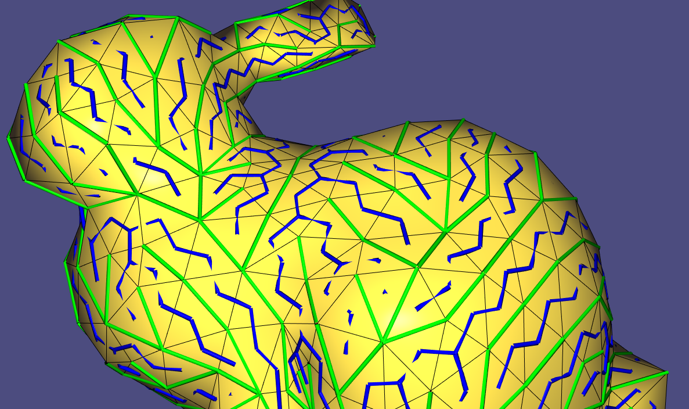
Let $g$ be the genus of the surface. The Euler characteristic of the mesh is given by
$$ |V| - |E| + |F| = 2 - 2g. $$
To calculate the generators of the first homology group, note that
$$ (|V| - 1) + (|F| - 1) + 2g = |E|. $$
The calculation shows that there are $2g$ many edges left that are neither in the dual nor in the primal spanning tree. You can now search these $2g$ edges and follow the vertices of these edges to the root of the dual spanning tree. The result will be a non-contractible cycle; a generator of the first homology group of your surface.
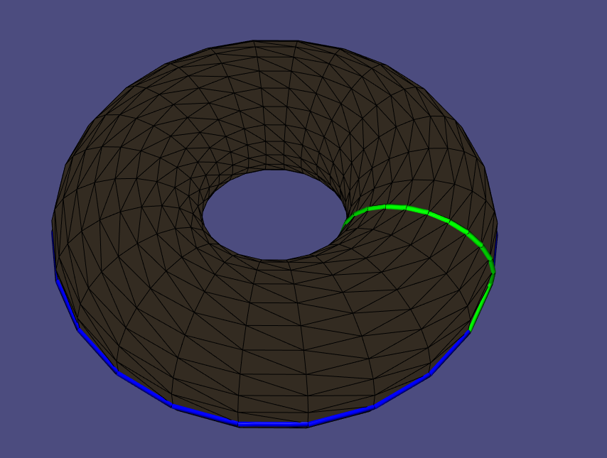
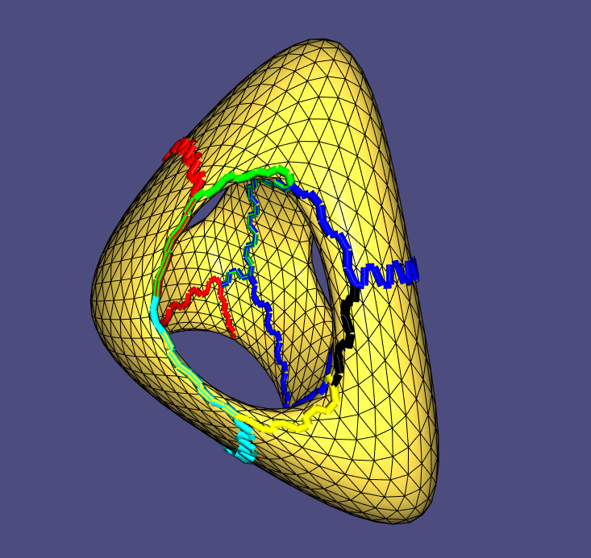
We provide you with a class VertexTree that you can use to build these trees. Complete the method compute_homology_generators. We provide you with some basis code in this method that can serve as a basis to finish this task. However, feel free to implement it in your favorite way. If you want to define an extra class, feel free to do so!
4) Build the left-hand side of the linear system:
It will be the aim to prescribe the holonomy around the basis cycles (i.e., the cycles of the one-ring neighborhood of each vertex and the chosen homology generators). This means we will set a constraint on the sum of the angles that we assign to the edges. We will work with edges—not half edges. In the constructor of the class Mesh, make sure that you store a single copy of a (dual) edge. The orientation is arbitrary. For example, if the vertices $3$ and $4$ are connected, you can either store Edge(3,4) or Edge(4,3) in the vector Edges resp. dual_edges.
Example:
For a given cell complex,
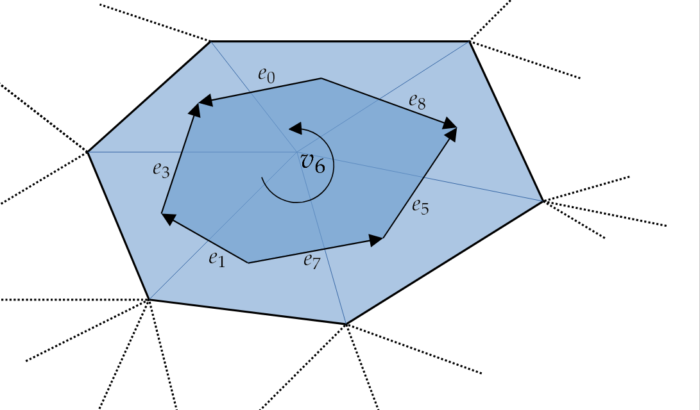
the 6th row of the “cycle matrix” will have the form
$$ A = \begin{pmatrix}
& & & & & \vdots & & & & & \\
+1 & -1 & 0 & -1 & 0 & +1 & 0 & +1 & -1 & 0 & \cdots \\
& & & & & \vdots & & & & &
\end{pmatrix} \in \{ -1,0,1 \}^{(|V|+2g) \times |E|}. $$
Consider all retractable basis cycles, i.e., the one-ring neighborhood around each vertex. Construct the cycle matrix exclusively for these cycles, denoted as $d_0^T \in \mathbb{R}^{|V| \times |E|}$. We refer to it as $d_0^T$ for reasons we won’t delve into here.
The calculation of signs for angles is not only necessary for the one-ring neighborhood but also for the homology generators. The resulting matrix obtained for the consideration of the basis cycles, denoted as $G \in \mathbb{R}^{2g \times |E|}$, is essential. To form the complete cycle matrix $A$, stack them together:
$$ A = \begin{pmatrix} d_0 \ G \end{pmatrix} \in \mathbb{R}^{(|V|+2g) \times |E|} $$
In the build_LHS method of the SolverMesh class, these matrices are constructed.
5) Preparation of the Singularities
In the case of electrostatics, we needed to manipulate the input to ensure the existence of a solution. For trivial connections, we need to do something similar. Imagine we would solve for adjustment angles \( \theta \) through the linear system
$$ A \cdot \theta = -\text{Gaussian Curvature}, $$
the vector field that would arise through parallel transport with this connection would have no singularities.
However, we will not be able to realize this for general surfaces since we have an additional constraint. You may have heard of the “hairy ball theorem,” i.e., that it is impossible to comb hair on a sphere without having a bald spot.
Therefore, you will need to specify specific positions where you want to have singularities and their degree and where not. In the method build_RHS_for_problem, you should specify the vertices or basis cycles on which you want to have the singularities and which degree the singularities should have. Store them in the vector singularities. You can use the method check_RHS_for_consistency in order to verify whether you chose them in such a way that this results in a solvable system. Once the singularities are specified, you can build specify the target holonomies for the linear solve through:
for(int i =0; i < target_holonomies.rows(); i++){
target_holonomies(i, 0) = angle_defects[i]; // for vertices just the gaussian curvature, angle defect for homology generators.
target_holonomies(i, 0) -=double(singularities[i]) *2* pi;
}
Fill the vector target_holonomies that will serve as the RHS for the system.
6) Solve for the Adjustment Angles
In the following step, complete the method solve_for_angles. Solve the problem
$$\mathrm{min}_{\text{adjustment}}\ A\ \text{adjustment} = -\text{target_holonomy}.$$
To do that, you can use a CG solver such as LeastSquaresConjugateGradient<SparseMatrix<double>>.
Remark: Convince yourself that this procedure indeed leads to a trivial connection and that parallel transport is now path independent. Imagine you connect two points on the mesh with two different paths. Why will the parallel transport for this novel discrete connection be the same for the two paths?
7) Compute the Vector Field
Once the adjustment angles per dual edge are computed, the trivial connection per edge can be obtained by composing the rotation matrix from the Levi-Civita connection with a rotation by the angle adjustment we obtained through the linear solve.
If $\mathcal{B}_a, \mathcal{B}_b$ describe the bases of the tangent spaces $f_a$, resp. $f_b$, let $v$ be a tangent vector in $f_a$ and $v’$ be the tangent vector in $f_b$ that arises through parallel transport with the trivial connection along the dual edge $e_{a,b}$. Now, let $\alpha_{ab}$ be the adjustment angle that we obtain through the linear solve. As above let $\theta_{ab}$ the adjustment angle encoding the Levi-Civita connection for the dual edge $e_{ab}$. If
$[v]_{\mathcal{B}_a}, [v’]_{\mathcal{B}_b}\in \mathbb{R}^2$ are the coordinate vectors of $v,v’$ in the respective bases, the parallel transport with the trivial connection can be expressed via
$$[v’]_{\mathcal{B}_b} = \begin{pmatrix} \cos(\theta_{ab} + \alpha_{ab})& -\sin(\theta_{ab} + \alpha_{ab})\\ \sin(\theta_{ab} + \alpha_{ab})& \cos(\theta_{ab} + \alpha_{ab})\end{pmatrix}[v]_{\mathcal{B}_a}$$
Complete the method compute_transported_vector_field and overwrite the variable parallel_transported_field.
To do that, pick one face of the mesh and place one vector there. Now, for the trivial connection, parallel transport is path independent. Hence we can transport this chosen vector into every other tangent space, for example using the dual spanning tree.
To finish, you can as before visualize the vector field with the provided method build_face_based_vector_field, that will overwrite a wireframe which can subsequently serve to visualize the vector field.
Observe that the obtained vector field has only singularities for the chosen cycles.
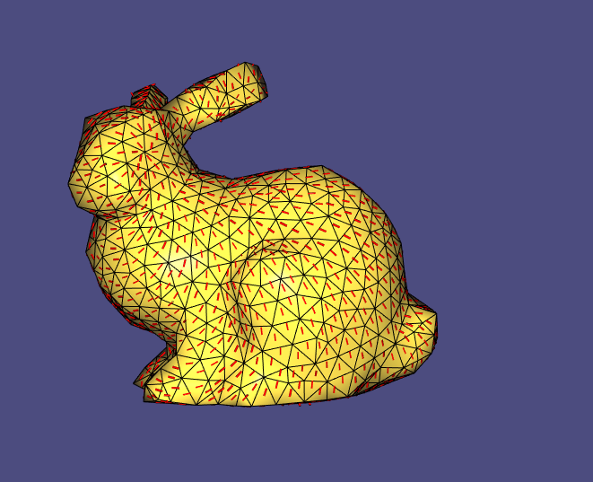
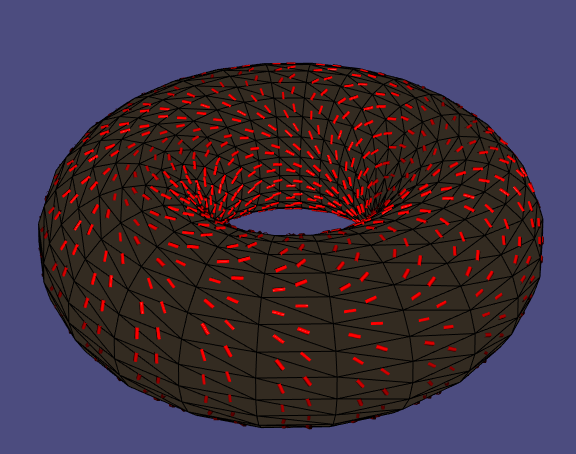
Attach screenshots of your vector fields together with a readme to your submission where you explain which mesh you were using and where you placed the singularities.